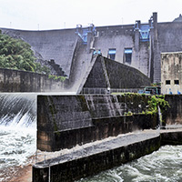

DAM

ダム(英: Dam)、堰堤(えんてい)は、治水、利水、治山、砂防、廃棄物処分などを目的として、川や谷を横断もしくは窪地を包囲するなどして作られる土木構造物。一般にコンクリートや土砂、岩石などによって築く人工物を指すが、ダムを造る動物としてビーバーがおり、また土砂崩れや地すべりによって川がせき止められることで形成される天然ダムと呼ばれるものもある。また、ダムは地上にあるものばかりでなく、地下水脈をせき止める地下ダムというものもある。このほか、貯留、貯蓄を暗示する概念的に用いられることがあり、森林の保水力を指す緑のダムという言葉がある。堰(せき、い、いせき)ともいうが、この場合は取水や水位の調節などが目的で、砂防目的のものは含まない。Wikipedia